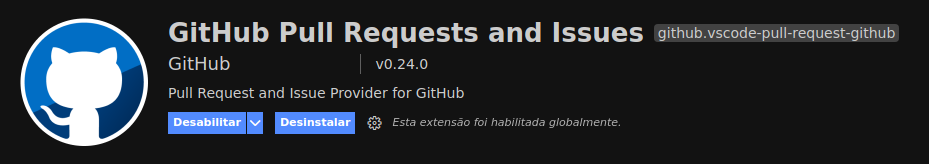

Como Usar Git & Github
-
Guia Definitivo
Olá companheiro venho através deste pequeno e simples artigo
apresentar-te uma pequena introdução de como usar os comandos do git
para acessar a sua conta e repositórios do github...
⤵️ - Indice
⚒ - Ferramentas
Esta aba do Visual Studio Code te permite fazer as publicações e comentarios das alterações que fizeres no repositório local, também te permite manter o projecto atualizado descarregando as alterações feitas no repositório remoto através da plataforma, como também ter o controle geral das funcionalidades do git através do teu VSCode.

Esta extensão do Visual Studio Code te permite revisar e manusear os pedidos de alteração e erros reportados aos teus projectos.
ℹ️ - Definições
Git:
GitHub:
Principais vantagens de usar o Git e o GitHub:
‣ Trabalho em equipe
‣ Ramificação do projeto
‣ Segurança
‣ Organização
Algumas propriedades do GitHub:
‣ Hospedagem de código-fonte (qualquer script de qualquer linguagem de programação)
‣ Características de rede social
‣ GitHub Pages integrado (permite ao usuário hospedar os seus projectos web e edita-los sempre que necessário)
‣ Colaboração (permite que vários usuários participem do desenvolvimento do mesmo projecto)
‣ Forks (permite aos usários copiarem outros projectos e fazerem a suas edições)
Tipos de repositórios: